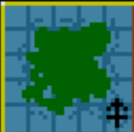
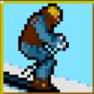
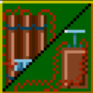

MIDWINTER
A GAME AHEAD OF ITS TIME
THE STORY
In 2099, a volcanic eruption triggers a new ice age that blankets the Earth. On a small volcanic island, survivors have built a fragile civilization. But now, General Masters and his forces are invading from the north, and only you—Captain John Stark, commander of the Free Villages Police Force (FVPF)—can organize the resistance.
Midwinter wasn't just a game; it was a pioneering open-world experience that combined action, strategy, and role-playing years before such combinations became standard. Players traversed a massive 160,000 square mile 3D landscape, recruited allies, sabotaged enemy installations, and fought to save their frozen homeland.
REVOLUTIONARY FEATURES
Midwinter was open world before that concept even existed, and a sandbox game before that term was coined. Players had complete freedom to approach objectives in any order, using any combination of skills and allies.
-

160,000 Square Mile Terrain Unprecedented 3D landscape size for its era
-

Real-Time Movement Ski, drive snowbuggies, or fly hang gliders
-
 32 Unique Characters Each with individual skills, relationships, and stories
32 Unique Characters Each with individual skills, relationships, and stories -

Emergent Gameplay Multiple paths to victory through action or strategy
MIKE SINGLETON
Mike Singleton (1951-2012) was a legendary British game designer known for pushing technical boundaries while creating deeply immersive worlds. Before Midwinter, he created the groundbreaking Lords of Midnight (1984), which pioneered the "landscaping" technique for 3D graphics on 8-bit computers.
Midwinter showcased his ability to blend multiple genres into cohesive experiences. The game received universal acclaim and won numerous awards, including the Golden Joystick Award for Best Simulation.